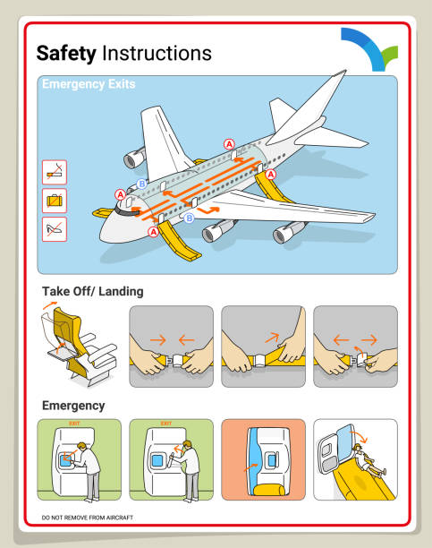

Pre-Flight Safety Checklist
- Check weather conditions and forecasts
- Inspect aircraft exterior for damage
- Verify fuel levels and quality
- Test all control surfaces
- Check engine oil and fluids
- Ensure proper weight and balance
- Review flight plan and route
Weather Considerations
- Never fly in severe weather conditions
- Check visibility requirements (minimum 3 miles)
- Monitor wind speeds and crosswind limits
- Be aware of icing conditions
- Avoid thunderstorms by at least 20 miles
- Check NOTAMs (Notice to Airmen) for updates
Emergency Procedures
- Know your aircraft's emergency checklist
- Practice engine failure procedures regularly
- Identify nearest airports on every flight
- Keep emergency contact numbers accessible
- Carry emergency survival kit
- Know how to use emergency radio frequencies
- Practice forced landing procedures
Basic Aviation Rules
- Maintain proper altitude separation
- Follow right-of-way rules in the air
- Use proper radio communication procedures
- Respect controlled airspace boundaries
- File flight plans for cross-country flights
- Keep current medical certificate
- Stay proficient with regular practice